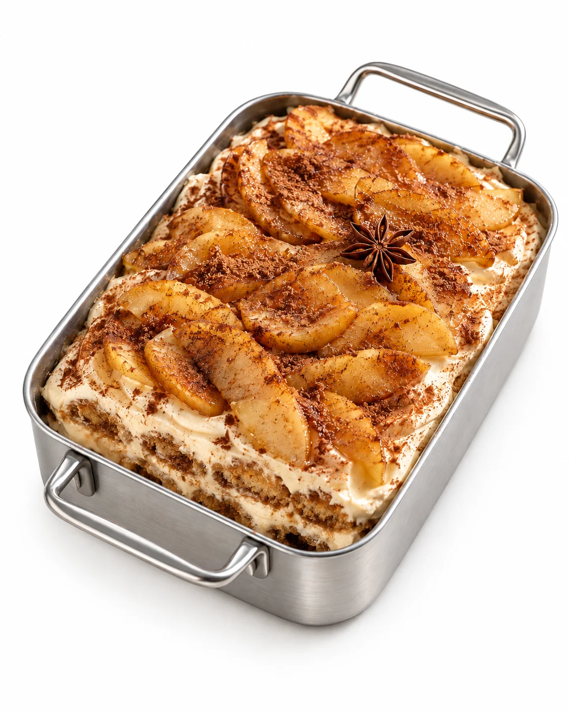
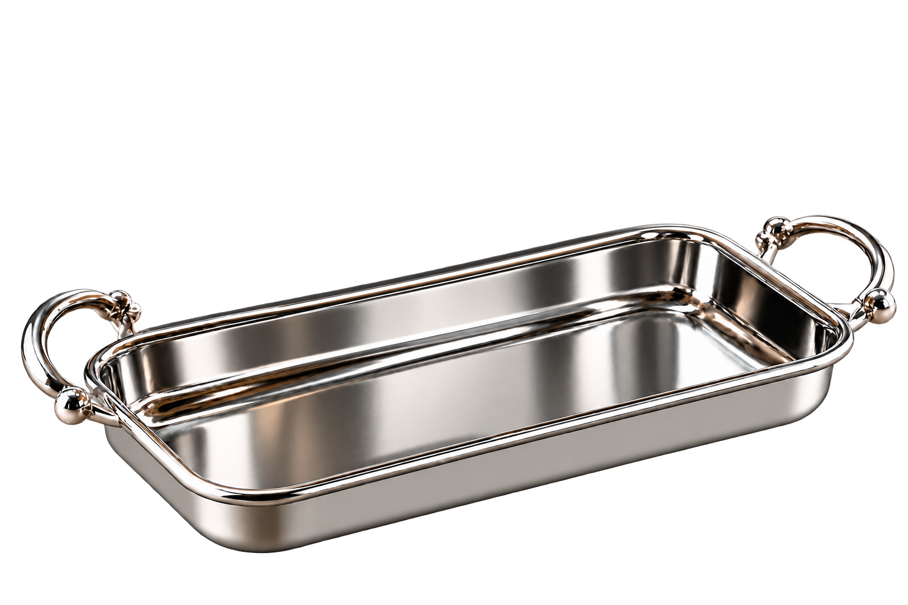
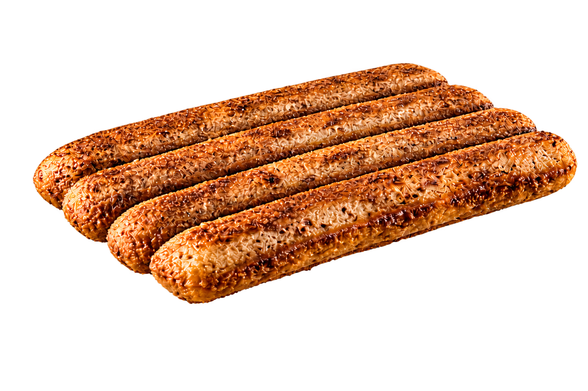
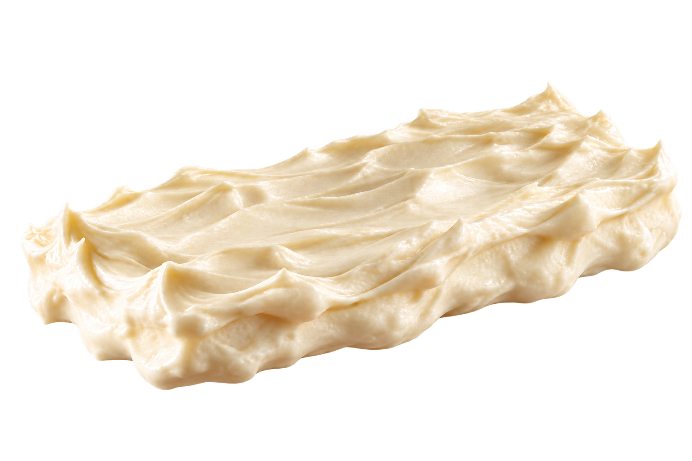
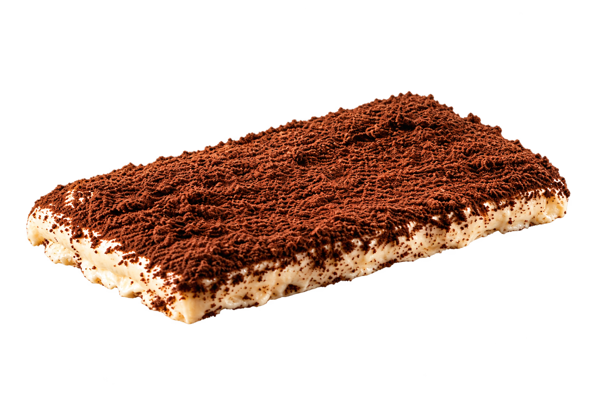
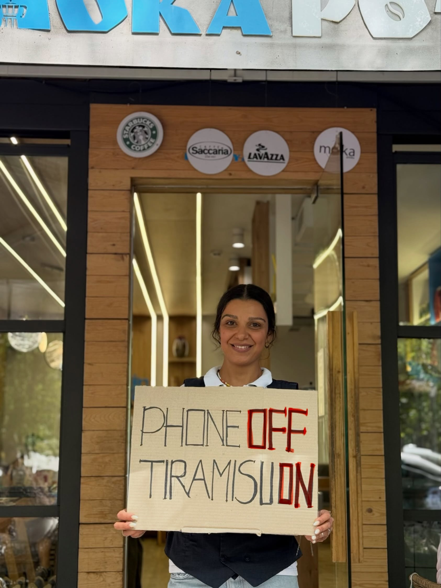
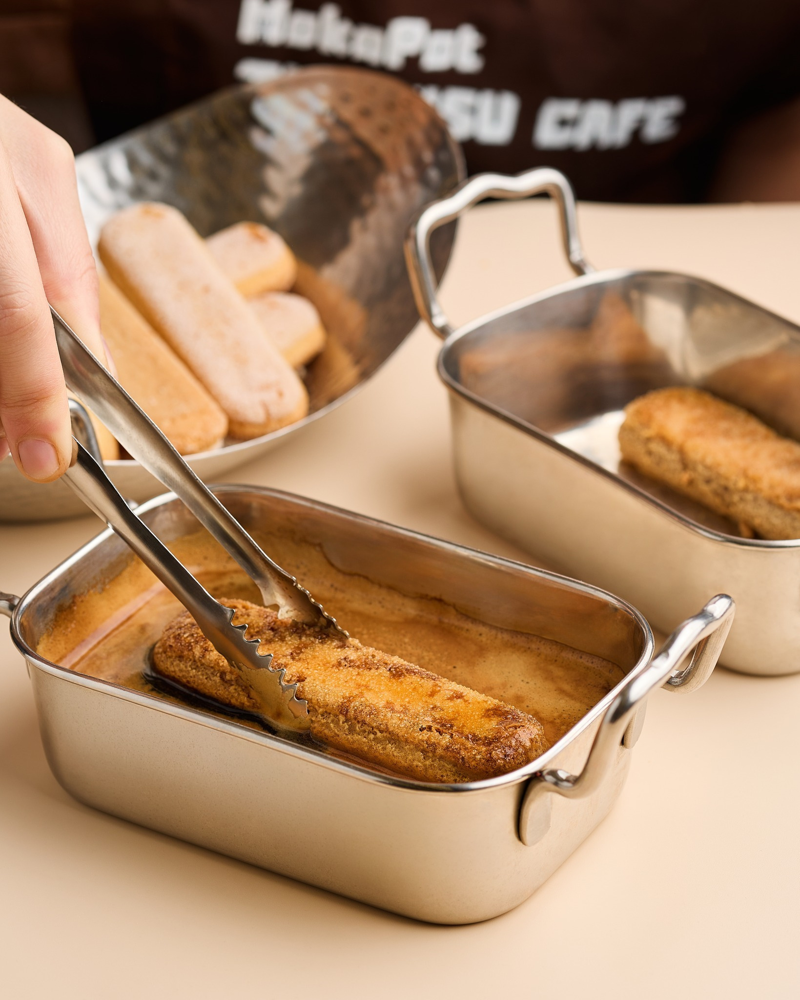

TERRAMISU




կակաո
մասկարպոնե
սուրճով
թխվածքաբլիթ
Բացահայտիր համը՝
շերտ առ շերտ։
ՇԵՐՏ ԱՌ ՇԵՐՏ


TERRA MISU · ԵՐԵՎԱՆ
Արի՛ սրճարան
Տիրամիսու, սուրճ և նախաճաշ՝ ամբողջ օրվա ընթացքում։
01Իսահակյան 26